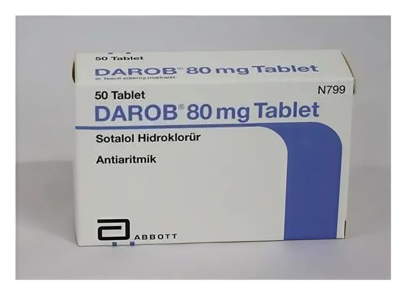

Darob 80 mg 50 Tablet

Ne için kullanılır
KT · Bölüm 1DAROB beyaz-beyazımsı, bikonveks ve bir yüzü “80” baskılı, yuvarlak tablettir ve beta- blokerler olarak bilinen ilaç grubuna dahildir. DAROB ,
50 tabletlik blister ambalajlarda satılmaktadır. DAROB
kalp karıncıklarından (kalbin alt odacıkları) kaynaklanan ve kalp çarpıntılarına yol açan kalp ritmi bozukluğu olan hastalarda kalbin normal şekilde atmaya devam etmesini sağlamak için kullanılır. DAROB ventriküler taşikardi (kalp atım hızının artması) veya ventriküler fibrilasyonlu (ventrikül kasının çok hızlı ve düzensiz kasılması) hastalarda kullanılır. Kalbin karıncıklarının üst bölümünden kaynaklanan ve kalp ritminin hızlanmasına yol açan tedavi gerektiren kalp ritmi bozukluklarının (semptomatik ve tedavi gerektiren taşikardi özelliği taşıyan supraventriküler kalp ritmi bozuklukları) tedavisinde de kullanılır.
Bu ilacı kullanmaya başlamadan önce bu KULLANMA TALİMATINI dikkatlice okuyunuz, çünkü sizin için önemli bilgiler içermektedir. • Bu kullanma talimatını saklayınız. Daha sonra tekrar okumaya ihtiyaç duyabilirsiniz. • Eger ilave sorularınız olursa lütfen doktorunuza veya eczacınıza danışınız. • Bu ilaç kişisel olarak size reçetelendirilmiştir, başkalarına vermeyiniz. • Bu ilacın kullanımı sırasında doktora veya hastaneye gittiğinizde bu ilacı kullandığınızı doktorunuza söyleyiniz. • Bu talimatta yazılanlara aynen uyunuz. İlaç hakkında size önerilen dozun dışında yüksek veya düşük doz kullanmayınız.